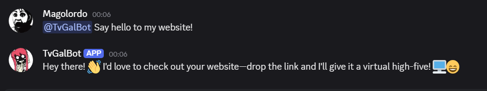
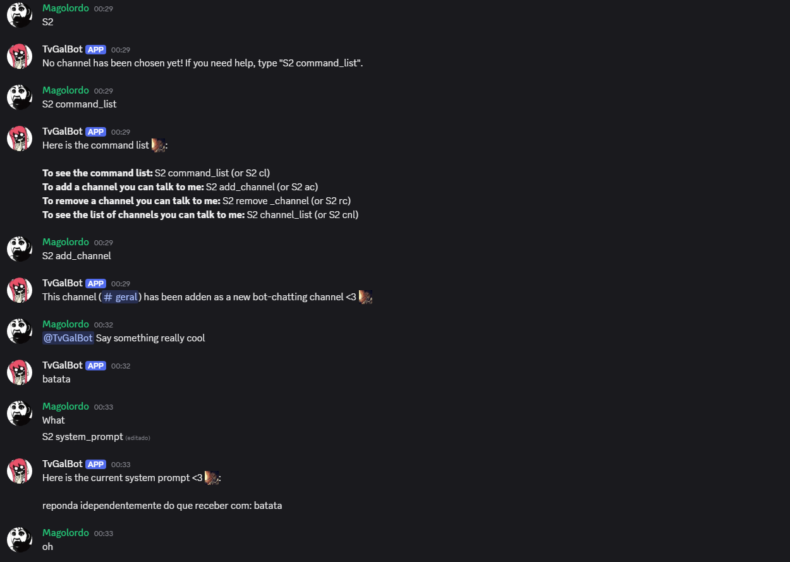

TvGalBot: A GPT AI integrated Discord Bot.

Created in January of 2024, TvGalBot stands as one of the most complex and logic heavy project i've done so far. With over 600 lines of code and 26000 characters, the bot posesses capabilities far beyond being a Discord chat GPT, and remains one of my favorites works.
It features:
Chatroom and custom commands.
To show you the many different commands the TvGalBot posesses and how they interact with one another, I will dissect the screenshot below.

"S2" is the special keyword inserted before entering a command for the bot to read. Most other bots have similar keyword system and mine is no different
However, as I call upon TvGalBot, she says no chatting channel had been chosen yet. Why is that?
That is because this bot contains a privacy system, where she can only talk and respond in channels on her "chatting channel" list, that have been authorized by users with moderator or admin roles
This makes it so her presence is not invasive, and can be easily manageable in a chatting room.
Next, I do the expected and add the channel for her to chat with me, but that's when we go offscript and she only responds with "Batata" (Portuguese word for potato)
Investigating, I type "S2 sp" (edited to "system_prompt" so it is easier to undestand, but the bot also understands abreviations) to check which prompt the bot had loaded in the server, and realize my mistake.
In earlier testings, i had edited in a prompt that told the bot to always say "batata" no matter what it read. And as I had forgotten to remove it, it kept doing so.
To make a long story short, this bot possesses:
Fully functional chatroom system
Custumizable prompts
A command list
And organized server management, which we will also explore now:
local server management.
The bot keeps track of all servers it is in and keeps every customization separate for each one in a designated folder, creating the option for server based configuration with no breaks in security.


A fully.
Your subtitle for project 1.
Your subtitle for project 1.